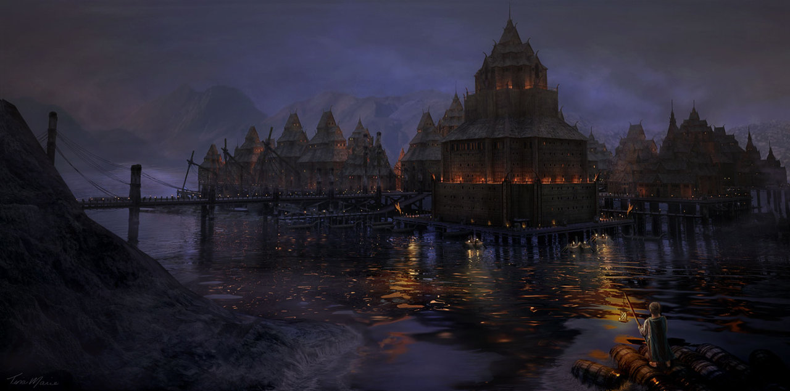

Карта средиземья

К карте
Все элементы
Эсгарот(Озерный Город)
Эсгарот, или Озёрный город — город людей на Долгом озере, стоявший  на возвышавшемся над водой большом деревянном помосте. Эсгарот был крупным торговым портом: с юга (из Дорвиниона и с побережий моря Рун) в него доставляли снедь и ви́на, а с севера (из Эребора и королевства эльфов в Лихолесье) везли оружие и украшения. Его купцы и градоначальники славятся своей скупостью и торговой хваткой. При этом горожане могут быть отзывчивыми и не терпят трусливых лидеров. В 2941 году Третьей Эпохи Эсгарот был уничтожен драконом Смаугом, однако вскоре его отстроили заново, уже на берегу, ибо никому из горожан не хотелось жить у озера, на дне которого покоился мёртвый дракон.